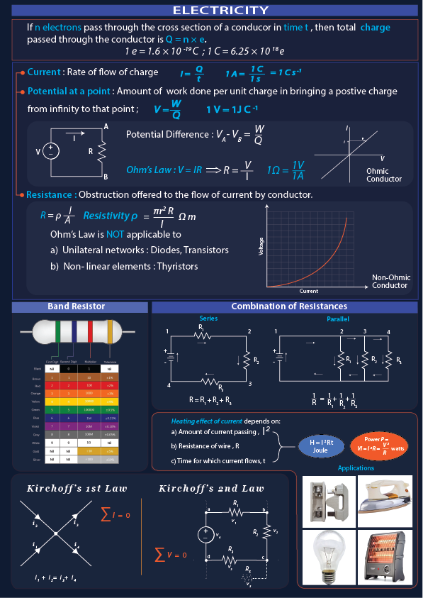

All of us know that the like charges repel each other and unlike charges attract each other. Some work is always involved in moving a charge in the area of another charge. What makes the charge to flow? Well, this basically happens because of the ‘Electric Potential’. Let us study more about it below.
If two charged bodies are in contact, the charge starts flowing from one conductor to other. The electric condition,that determines the flow of charge from one conductor to other in contact, is the electric potential. Electric potential is comparable to level in case of water, the temperature in case of heat and pressure in the case of fluids. Earth is a conductor that can hold an infinite charge and can give infinite charge without changing its potential. Its potential is taken as zero potential. Thus the positively charged conductor has more positive potential than the earth. A negatively charged conductor has negative potential less than that of the earth.The electric potential difference between two points in an electric circuit is the work done in moving a unit positive charge from one point to the other. When W joule of work is done in bringing the test charge Q coulomb from infinity to the point P then the electric potential V at the point P then, V= W/Q The work needed to move a charge Q from infinity to a point P where electric potential is V will be W=QV The S.I unit of work is joule and that of the charge is coulomb. Learn about Electric Charge?

the current flows between two points A and B of an electric circuit, we only consider the charge between the points A and B, this means it is not necessary to know the exact potential at each point A and B. It is sufficient to know the potential difference between the two points A and B. Therefore the potential difference between the two points is equal to the work done in moving a unit positive charge from one point to the other. The potential difference is expressed in volt (V). The potential difference between two points is said to be 1 volt if the work is done in moving 1-coulomb charge from one point to other is 1 joule.